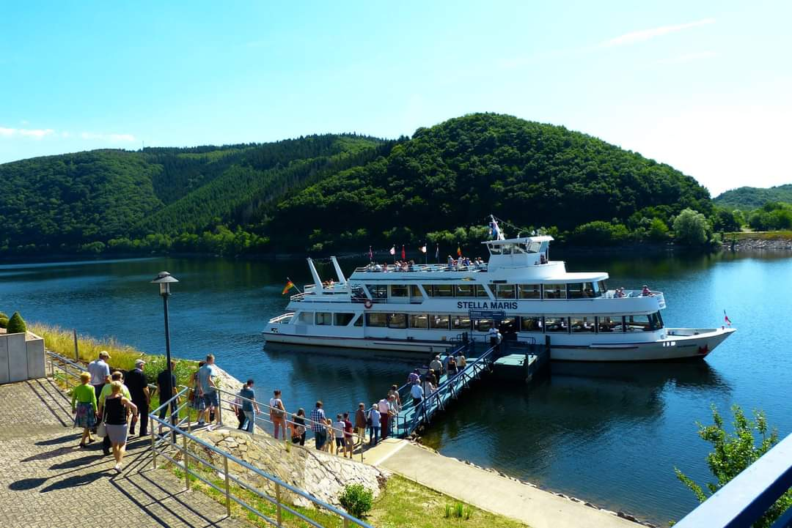

☰
X
HOME
NIEUWS
AGENDA
EVENEMENTEN
OVER ONS
SUPPORTERSCLUB
CONTACT
HOME
NIEUWS
AGENDA
EVENEMENTEN
OVER ONS
OVER ONS
SUPPORTERSCLUB
CONTACT
Supportersclub
De Boemelkapel is een graag geziene kapel in (Zuid-)Limburg maar ook buiten haar provincie- en landsgrenzen. Dat blijkt ook uit het feit dat zij een eigen supportersclub hebben.
De supportersclub is een eigen actieve vereniging welke de Boemelkapel volgt bij haar optredens en uitjes. Daarnaast is er ook een jaarlijkse supportersdag waarbij er een leuk uitje wordt verzorgd, in binnen- of buitenland en meestal ook een optreden van de Boemelkapel op desbetreffende locatie. Als lid van de supportersclub geniet je van vele voordelen zoals;
- Korting op entree bij evenementen van de Boemelkapel
- Altijd als eerste op de hoogte van nieuwtjes
- Gezelligheid en plezier
- Jaarlijkse supportersdag
Geïnteresseerd? Neem eens contact op met: mailadres
